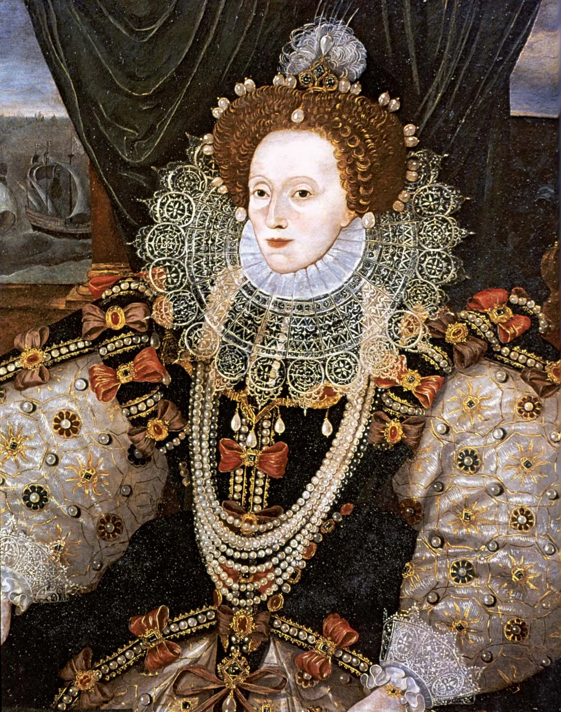

Queen Elizabeth l
Queen Elizabeth I, ruling from 1558 to 1603, is considered one of history's greatest leaders. Her reign brought political stability, cultural growth, and solidified England as a global power. She navigated religious conflicts, securing the Protestant Reformation and establishing the Church of England. Elizabeth’s diplomatic skill and military leadership, notably in defeating the Spanish Armada in 1588, strengthened England’s position. Her era, known for its flourishing arts and exploration, saw the rise of figures like Shakespeare and Drake. Elizabeth’s pragmatic, eloquent leadership laid the groundwork for England's imperial future, earning her a lasting legacy as a powerful and visionary ruler.